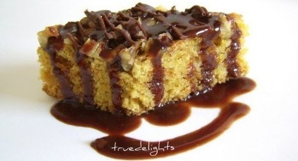

Ingrediente
Ciocolata neagra
Apa-3 linguri
Zahar-200g
Cacao-3 linguri
Margarian-50g
Mod de preparare:
Se amesteca bine zaharul cu uleiul, se adauga apa minerala, morcovul, coaja de lamaie si scortisoara. La final se incorporeaza faina amestecata cu praful de copt. Compozitia obtinuta, care trebuie sa fie moale, ca la chec, se toarna intr-o tava unsa cu ulei si tapetata cu faina. Deasupra se repartizeaza nucile.
Se coace in cuptorul deja incins, timp de 25-30 minute.
Se lasa sa se raceasca si se taie dupa preferinta.